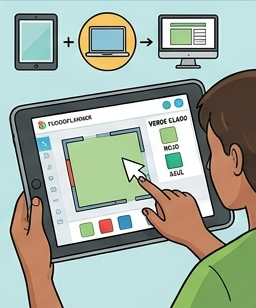

Texto

¿Qué vamos a hacer?
Vamos a dar el salto del papel a la pantalla. Tu misión es dibujar la planta del aula taller utilizando la versión gratuita de Floorplanner. El objetivo es obtener un plano digital limpio y exacto que nos diga automáticamente cuántos metros cuadrados tiene el suelo y cuánto miden las paredes. ¡Sin errores de cálculo!
Organización
Tiempo: 1 h.
Trabajo: Individual.
Lugar: Aula de informática o con dispositivos móviles/tablets.
Paso a paso
1. Preparación del Lienzo
Entra en Floorplanner y crea un nuevo proyecto. Asegúrate de que las unidades estén en Metros:
No vamos a usar plantillas. Empezaremos desde cero ("Empty plan").
Ten a tu lado el papel milimetrado de la Tarea 2; es tu "guía de comandos".
2. Dibujo de Muros (Precisión Digital)
Dibuja el contorno del aula:
Usa la herramienta "Draw Walls" (Dibujar paredes).
Haz clic para empezar y mueve el ratón. Truco: No intentes acertar con el ratón; escribe directamente la medida exacta en el cuadro de texto que aparece abajo y pulsa Enter.
Fíjate en que el programa cierra el área automáticamente y le pone un color gris al suelo.
3. Colocación de Huecos (Puertas y Ventanas)
Ve al menú de objetos (icono de la silla/martillo) y busca "Windows" y "Doors".
Arrastra la puerta a su lugar exacto. Haz clic sobre ella para ajustar su ancho real (por ejemplo, 0.80 m o 0.90 m).
Haz lo mismo con las ventanas. El programa restará automáticamente ese espacio del total de la pared.
4. Lectura de Datos (La "Magia" del Software)
Una vez cerrado el plano, haz clic en el centro de la habitación:
El programa te mostrará el Área y el Perímetro.
Anota estos datos en tu cuaderno y compáralos con los obtenidos con la calculadora.
¿Qué vamos a aprender?
A utilizar una herramienta profesional de dibujo de planos de forma simplificada.
A comprobar que las medidas del papel y las digitales coinciden.
A obtener datos automáticos de superficie para evitar errores humanos en el presupuesto.
Tu rol como Delineante Digital
Aunque trabajas en tu equipo, debes ser riguroso:
Verificador: Compara cada muro que dibujas con tu plano de la Tarea 2. Si en el papel pone 6.40 m, en la pantalla debe poner 6.40 m.
Material que vais a usar
Portátil o Tablet.
Ratón (muy recomendado para trabajar con muros).
Plano de la Tarea 2 (imprescindible).
Calculadora (por si necesitas sumar algún tramo de pared).
Si surge algún problema…
¿He dibujado un muro de más? Selecciónalo y pulsa la tecla Suprimir o el icono de la papelera.
¿El plano me sale inclinado? Mantén pulsada la tecla Shift mientras dibujas para que los muros salgan totalmente rectos (a 90°).
¿No veo las medidas? Activa la opción "Show dimensions" en el menú de visualización (icono de la rueda dentada).